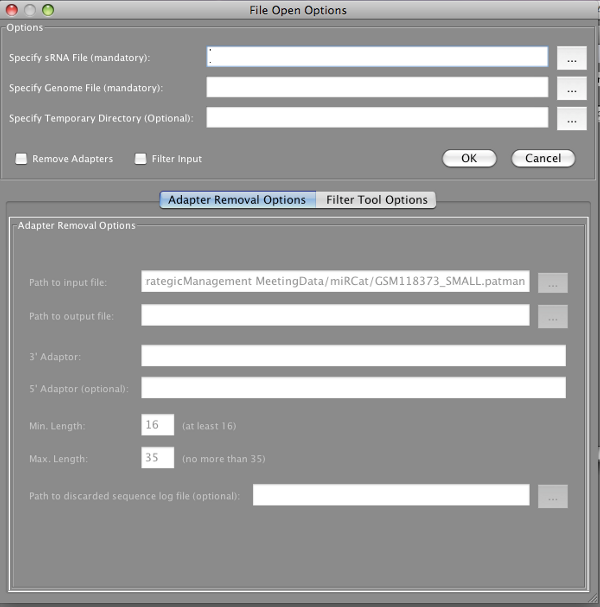

New miRCat Projects
Using miRCat for the first time to create a new project will first show the pre-processing window.

miRCat requires as input two FASTA files: the sRNA sequence file, with and a corresponding genome for the organism that is being studied.
A user then has the option to enable the pipelining functionality of the sRNA Workbench in order to directly pre-process the sRNA data. If desired the user can Filter the data and/or Remove the Adapters from the data. However, if the data has already been through the pre-processing procedure, for example if the stand alone versions of the tools had been used, a user can skip this by leaving the respective check-boxes unticked.
Before processing, miRCat maps the sRNA sequences to the genome, using PatMaN. However, if the file has already been aligned using the stand alone Sequence Alignment tool miRCat will detect this automatically providing the .patman extension remains on the file name.
If a user desires all the files created throughout the pre-processing procedures to be retained, an additional file path can be populated with the location for the data. However, if this box is left blank all the pre-processing files will be marked for deletion on exit of the program.